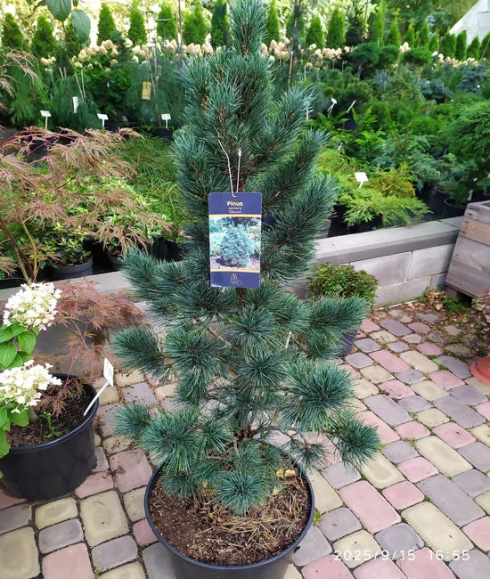

🌿 EcoGlow Desk
Твій особистий зелений оазис на столі
Автополив
Достатньо заправити резервуар раз на 2 тижні.
Спектральне світло
Прискорює ріст рослин.
USB-живлення
Працює прямо від вашого ноутбука або повербанка.
Галерея
